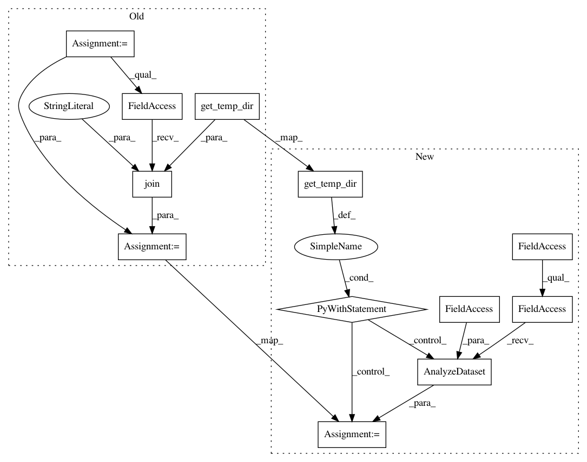

8a70e91ab9878edde4a4abece136f931d032f687,tensorflow_transform/beam/impl_test.py,BeamImplTest,testNumericAnalyzersWithSparseInputs,#BeamImplTest#,481
Before Change
with self.assertRaises(TypeError):
def min_fn(inputs):
return {"min": tft.map(repeat, inputs["a"], tft.min(inputs["a"]))}
_ = input_dataset | beam_impl.AnalyzeDataset(
min_fn, os.path.join(self.get_temp_dir(), "sparse_min"))
with self.assertRaises(TypeError):
def max_fn(inputs):
return {"max": tft.map(repeat, inputs["a"], tft.max(inputs["a"]))}
After Change
input_metadata = self.toMetadata({"a": tf.VarLenFeature(tf.int64)})
input_dataset = (input_data, input_metadata)
with beam_impl.Context(temp_dir=self.get_temp_dir()):
with self.assertRaises(TypeError):
def min_fn(inputs):
return {"min": tft.map(repeat, inputs["a"], tft.min(inputs["a"]))}
_ = input_dataset | beam_impl.AnalyzeDataset(min_fn)
with self.assertRaises(TypeError):
def max_fn(inputs):
return {"max": tft.map(repeat, inputs["a"], tft.max(inputs["a"]))}
_ = input_dataset | beam_impl.AnalyzeDataset(max_fn)
with self.assertRaises(TypeError):
def sum_fn(inputs):
return {"sum": tft.map(repeat, inputs["a"], tft.sum(inputs["a"]))}
_ = input_dataset | beam_impl.AnalyzeDataset(sum_fn)
with self.assertRaises(TypeError):
def size_fn(inputs):
return {"size": tft.map(repeat, inputs["a"], tft.size(inputs["a"]))}
_ = input_dataset | beam_impl.AnalyzeDataset(size_fn)
with self.assertRaises(TypeError):
def mean_fn(inputs):
return {"mean": tft.map(repeat, inputs["a"], tft.mean(inputs["a"]))}
_ = input_dataset | beam_impl.AnalyzeDataset(mean_fn)
def testUniquesAnalyzer(self):
// User defined transform_fn accepts and returns a dict of Columns.
def preprocessing_fn(inputs):
return {
In pattern: SUPERPATTERN
Frequency: 3
Non-data size: 12
Instances
Project Name: tensorflow/transform
Commit Name: 8a70e91ab9878edde4a4abece136f931d032f687
Time: 2017-03-22
Author: no-reply@google.com
File Name: tensorflow_transform/beam/impl_test.py
Class Name: BeamImplTest
Method Name: testNumericAnalyzersWithSparseInputs
Project Name: tensorflow/transform
Commit Name: 8a70e91ab9878edde4a4abece136f931d032f687
Time: 2017-03-22
Author: no-reply@google.com
File Name: tensorflow_transform/beam/impl_test.py
Class Name: BeamImplTest
Method Name: testAnalyzeBeforeTransform
Project Name: tensorflow/transform
Commit Name: 8a70e91ab9878edde4a4abece136f931d032f687
Time: 2017-03-22
Author: no-reply@google.com
File Name: tensorflow_transform/beam/impl_test.py
Class Name: BeamImplTest
Method Name: testTransformWithExcludedOutputs